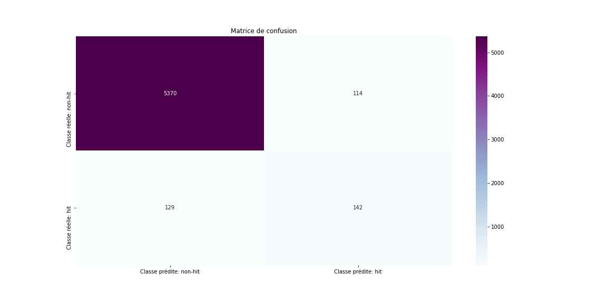

Utilisation des données de Spotify pour prédire quelle musique va être hit (partie 1)
Category > Machine Learning
Aug 06, 2020
Des milliers de musiques voient le jour tous les ans dans le monde. Certaines connaissent de vrais succès dans l’industrie musicale ; d’autres moins. Il est un fait que réussir dans cette industrie demeure une tâche difficile. Investir dans la production d’une chanson requiert des activités diversifiées et peuvent consommer beaucoup de ressources. Il n’y a que très peu de labels de musiques qui financent des études pour savoir dans quelle mesure la chanson qu’ils sont sur le point de publier pourrait être un « hit musical » .
Ma curiosité à propos de la musique m’a poussé à consacrer un peu de temps à l’étude du sujet. Pour beaucoup de personnes, le secret de Drake dans la fabrication de ses hits musicaux ces dernières années réside dans son style en tant qu’artiste ; pour d’autres, c’est à sa notoriété qu’il le doit principalement. De manière générale, les avis ne vont pas que dans un sens dès qu’il est question d’expliquer pourquoi une musique est hit, mais pas une autre ; ou encore ce qu’un artiste devrait prioriser dans la production d’une musique s’il veut que cette dernière soit un « hit ».
Cet article biparti constitue une photographie du projet sur lequel j’ai travaillé ces dernières semaines. J’ai utilisé des techniques de data science afin de comprendre ce qui caractérise une chanson populaire, et plus précisément comment il serait possible de prédire la popularité d'une chanson en me basant uniquement sur ses caractéristiques d'audio et sur le profil de l'artiste. J’ai construit un modèle-classeur de machine learning pouvant classer une chanson en hit ou non-hit.
Bien que des facteurs sociaux comme le contexte dans lequel la chanson a été diffusée, la démographie de ses auditeurs et l'effectivité de sa campagne de marketing peuvent tout aussi bien jouer un rôle important dans sa viralité, j’ai émis l'hypothèse que les caractéristiques inhérentes à une chanson, tels que le profil de l'artiste qui l'interprète, sa durée, ses caractéristiques d'audio peuvent être corrélés et également révélateur de sa viralité.
Mes données
Je n’ai pas pu disposer d’un dataset venant d’une seule et unique source qui comporterait toutes les variables. Pour pallier à ce problème, J’ai recouru aux techniques de « data enrichment » avec les trois sources de données suivantes : Billboard, Spotify et Genius. En premier lieu, j’ai fait usage de web scrapping, avec le package BeautifulSoup, pour recueillir les musiques les plus populaires de Billboard Year-End Hot 100 datant de 2010 à 2019, à raison de 100 musiques par année. Ensuite, le package Spotipy a été utilisé pour la récupération des données relatives aux caractéristiques d’audio des musiques tels que dansabilité, instrumentalité, vivacité, etc., d’une part ; et, d’autre part, celles liées au profil de l’artiste comme nombre de followers, popularité, etc. à la fois des musiques hits récupérées précédemment et d’autres musiques non-hits de la même période.
Et enfin, Genius sera utilisé principalement pour la récupération des paroles de toutes les musiques que nous avons recueillies.
Une musique de notre dataset est considérée comme un « hit » si elle a fait partie du classement du Billboard Year-End Hot 100 au moins une fois pendant l’une des années sur la période considérée. En d'autres termes, notre modèle a eu pour mission de prédire si une chanson ferait partie de la liste des 100 musiques les plus populaires de Billboard ou non.
Outils utilisés:
- Le package spotipy pour accéder aux données de la plateforme musicale de Spotify
- seaborn et matplotlib pour la visualisation des données
- pandas et numpy pour l'analyse des données
- LightGBM et la librairie scikit-learn pour la construction et l'évaluation du modèle
Les variables
Spotify est l'une des plus grandes plateformes de streaming dans le monde. A l'instar de Twitter ou Facebook, elle fournit une API (Application Programming Interface) pour que les développeurs puissent interagir avec son immense base de données musicale. Via des endpoints de cet API, j'ai pu récolter des données pour plus de 22 000 chansons; chaque chanson étant caracterisée par environ une vingtaine de variables.
Les variables retournées par l'API sont aussi riches en information que variées. Toutefois, j'ai selectionné uniquement celles qui sont jugées pertinentes pour le travail. Ensuite, elles ont été transformées via les techniques de «feature engineering » afin de préparer le jeu de données au mieux pour l'entraînement du modèle. Vous trouverez la description de chacune des variables utilisées ici. De manière générale, les codes complets du projet sont accessibles à travers ce lien.
Certaines de ces variables sont utilisées uniquement pour l'analyse, d'autres participent à toutes les étapes du pipeline. A présent, jetons un coup d'œil sur la dimension de notre jeu de données.
df.shape
Après avoir choisi les variables disponibles jugées pertinentes pour le modèle, supprimé les observations contenant des valeurs manquantes et les duplications, notre jeu est réduit à 19 120 observations contenant 24 variables chacune. Les 5 premières observations de notre jeu sont les suivantes:
df.head(n=5)
Visualisation des données
Avant de construire le modèle, j’ai voulu explorer les données un peu via des visualisations, quoique le but premier du travail ne fût pas de mener une analyse exploratoire complète.
A la lumière du graphique ci-dessus, janvier est le mois durant lequel plus de musiques hits sont sorties; juillet étant le mois le moins sollicité. Nous remarquons aussi que la majorité des hits de la période sont sortis le 4ème jour de la semaine; soit jeudi. Enfin le premier jour du mois est largement plus utilisé pour publier une chanson.
Fort de ce constat, nous pourrions déduire que publier une chanson le premier janvier, c'est probablement un pas vers l'optimisation des chances de sa viralité. On doit tout de même être prudent: corrélation n'est pas causalité. Il faudrait pousser notre analyse plus en profondeur afin d'être plus précis dans cette conclusion.
J’ai poursuivi la visualisation en voulant avoir une idée des artistes ayant enregistré le plus de morceaux hits sur la période. Sans surprise aucune, le graphique ci-dessous montre que les artistes comme Drake, Rihanna et Taylor Swift ont enregistré plus de musiques hits que quiconque autre artiste sur la période. Ceci étant dit, il est plausible de croire qu'une chanson a plus de chances d'être virale si elle contient la voix de l'un de ces artistes.
Pour comprendre ce qui fait qu’une musique est hit ; et non une autre, il est impératif d’étudier les variables relatives à l’audio des deux catégories. C’est ainsi que j’ai voulu avoir une idée sur la distribution de ces variables au regard des deux catégories.

Les variables prédominantes au sein des deux catégories sont les mêmes : énergie, dansabilité et valence. La seule différence est que les valeurs moyennées de ces variables sont plus élevées pour la catégorie des chansons hits. Ceci atteste que les musiques hits sont plus rapides et sonores. Elles sont plus adaptées à la danse et sont plus enclines à inspirer la joie, la gaité, l'euphorie.
L’approche machine learning
Jusque-là, nous avons pu découvrir quelques insights intéressants à propos des données. Afin d'écourter cet article, passons directement à la partie concernant l'algorithme de machine learning qui a été utilisé. Je voulais construire un modèle afin de prédire la classe, hit ou non-hit, qu'une musique est la plus susceptible d'appartenir en me basant sur un ensemble de variables explicatives, comme expliqué au début de cet article. A l’état brut, les données recueillies n’étaient pas prêtes pour l’entrainement d’un modèle de machine learning. Je les ai donc traitées ; d’abord, en me servant de la technique SMOTE, car la classe des musiques hits était sous-représentée par rapport à la catégorie non-hit, ensuite des autres techniques de «feature engineering » dans le but de normaliser les données.
Par ailleurs, j’ai voulu un modèle qui soit le plus performant possible. Pour cela, j’ai entrainé plusieurs algorithmes et comparer les résultats sur la base des critères d’évaluation retenus. Il s’est avéré que l’algorithme de classification de LightGBM est celui qui, au moment de l’entrainement, a mieux détecté les patterns entre les variables explicatives et la variable à prédire (hit).
%%capture
%matplotlib inline
import lightgbm as lgb
from sklearn.metrics import auc, accuracy_score, roc_auc_score, roc_curve, confusion_matrix
from imblearn.over_sampling import SMOTE
from sklearn.model_selection import train_test_split
sm = SMOTE(random_state=42)
X=df[['acoustique', 'dansabilite', 'energie', 'instrumentalite', 'vivacite','intensite','eloquence', 'valence','tempo','duree']]
y=df['hit']
# Fractionnement du dataset en deux sous-jeux: un pour l'entrainement et l'autre pour tester
X_train, X_test, y_train, y_test = train_test_split(X, y, test_size=0.30, random_state=20)
#suréchantillonnage des données
X_res, y_res = sm.fit_resample(X_train, y_train)
# Paramètres optimisés via GridSearch
clf = lgb.LGBMClassifier( boosting_type='gbdt', class_weight=None, colsample_bytree=1.0,
importance_type='split', learning_rate=0.2, max_depth=-1,
min_child_samples=20, min_child_weight=0.001, min_split_gain=0.0,
n_estimators=90, n_jobs=-1, num_leaves=31, objective=None,
random_state=None, reg_alpha=0.0, reg_lambda=0.0, silent=True,
subsample=1.0, subsample_for_bin=200000, subsample_freq=0)
clf.fit(X_res, y_res)
Matrice de confusion
Pour un premier niveau d'analyse de la performance du modèle, nous allons utiliser la matrice de confusion. La visualisation de la matrice de confusion nous permettra de comprendre les erreurs commises par notre modèle-classeur par rapport au sous-jeu de test

Cette matrice mesure la qualité d'un système de classification. Dans le cadre d'une classification binaire, le diagonal principal représente les observations classées correctement par le modèle; et le diagonal secondaire, celles classées incorrectement. De ce fait, l'erreur la plus fréquente commise par le modèle est d'avoir classé une chanson en tant que non-hit alors qu'en réalité elle était hit (129 cas), l'erreur de type II plus précisément.
L'erreur de type I consiste en ce que le modèle classe une musique comme hit alors qu'elle est non-hit (faux hit); et l'erreur de type II, l'inverse; c'est-à-dire le cas où il classe une musique comme non-hit pourtant elle est hit (faux non-hit). Si nous essayons de comprendre la psychologie d'un producteur de musiques, l'erreur de type I est moins acceptable que celle de type II. Nous ne voudrions pas consentir toutes les dépenses liées à la production et la promotion d'une musique qu'un modèle a prédite hit pour que finalement elle ne le soit pas. La valeur de l'erreur de type I devrait être minimale.
Le rapport de classification
Le rapport de classification présente des statistiques calculées à partir des données de la matrice de confusion. Chaque métrique décrit un aspect différent de la classification. Nous allons nous servir de ce rapport pour un deuxième niveau d'analyse de la performance du modèle.
from sklearn.metrics import classification_report
print(classification_report(y_test, y_pred, target_names=['non-hit','hit']))
L' « accuracy », qui mesure globalement le pourcentage de classification correcte effectué par le modèle, est de 96%. Vu que le sous-jeu de test est déséquilibré, ce pourcentage est étiré par la classe surreprésentée, en l'occurrence la classe non-hit. Cette métrique n'est donc pas la meilleure que nous pourrions utiliser.
Le « recall » (sensibilité) mesure le pourcentage d'occurrences classées correctement par le modèle pour chaque classe. Une classification est correcte lorsque la classe prédite correspond à la classe réelle. D'une part, parmi les 5 484 musiques de classe non-hit que nous avons utilisées pour tester le modèle, 98% ont été classées correctement. D'autre part, l'algorithme a classé correctement seulement 52% des 271 musiques de classe hit que nous lui avons soumises. Vous l'aurez compris : il est plus difficile pour l'algorithme de classer une musique hit comme hit (vrai hit) que de classer une musique non-hit comme non-hit (vrai non-hit).
Les niveaux de précision pour les classes non-hit et hit sont respectivement de 0.98 et 0.55. Cela traduit que 98% de toutes les musiques que le modèle a classé comme non-hits sont en effet non-hits; et, seulement 55% des musiques qu'il a prédites hits le sont vraiment.
Constat : Notre modèle réagit mieux dès qu'il s'agit de musiques non-hits. Cela est fort probablement dû au fait que dès le départ cette classe comptait beaucoup plus de données. La détection de pattern entre la modalité non-hit de la variable dépendante et les autres variables explicatives est peut-être favorisée à cause de cela.
Une fois satisfait de la performance du modèle, je me suis résolu à comprendre les variables explicatives les plus influentes dans la détermination de la classe d'une chanson donnée. C’est pourquoi j’ai eu recours au graphique d’importance ci-dessous.

Nous pouvons voir que la popularité d’une chanson sur Spotify est la variable la plus importante dans le processus de prédiction de la classe qu’elle est la plus susceptible d’appartenir. Ensuite, la popularité de l’artiste sur Spotify, le nombre de followers que ce dernier possède et le nombre de marchés sur lequel la musique est disponible constituent une deuxième vague de variables déterminantes dans le processus. Enfin viennent principalement les variables liées à l'audio des chansons avec un niveau d’influence relativement proche.
Cette analyse attire l’attention sur quelque chose de majeur. Essentiellement, une musique est « hit » si elle est populaire sur Spotify, est interprétée par un artiste lui-même populaire sur Spotify et possède un nombre important de followers, et enfin, si elle est disponible dans le plus grand nombre de pays à travers le monde. Cette conclusion semble logique, et... Eurêka🙂, elle est aussi vérifiée empiriquement par notre modèle.
Pour mieux apprécier la pertinence de cette conclusion, il faut garder à l'esprit que le palmarès des 100 musiques les plus populaires de Billboard est basé principalement sur un aspect commercial. En effet, ce palmarès est le reflet fidèle des ventes physiques et digitales, l'écoute à la radio et le streaming des musiques aux Etats-Unis ; toutes des activités génératrices de revenu, directement ou indirectement.
Une musique est d'autant plus écoutée en ligne qu'elle est populaire sur Spotify; plus de streams traduit plus de revenus générés car après chaque morceau écouté par un abonné, les plateformes de streaming reversent une somme à l'artiste. La popularité de l'artiste sur Spotify et le nombre de followers qu'il y possède constituent des canaux qui amplifient le nombre de streams et de ventes, ce qui va ensuite contribuer à grossir le revenu généré par ses musiques.
Plus la musique génère de revenus, plus elle a de chances de faire partie du palmarès des 100 musiques les plus populaires de Billboard en fin d'année; donc plus elle a aussi de chances d'être classée hit par notre modèle car les variables qui déterminent principalement le niveau de revenu de la musique sont les plus influentes dans le processus de classfication d'après notre graphique d'importance (logique, non 😉?).
Généralement, une musique possède une autre caractéristique importante que nous n'avons pas encore prise en compte: les paroles. Pouvons-nous augmenter davantage la performance du modèle en nous servant des lyriques? C'est ce que nous allons explorer dans la deuxième partie de l'article.